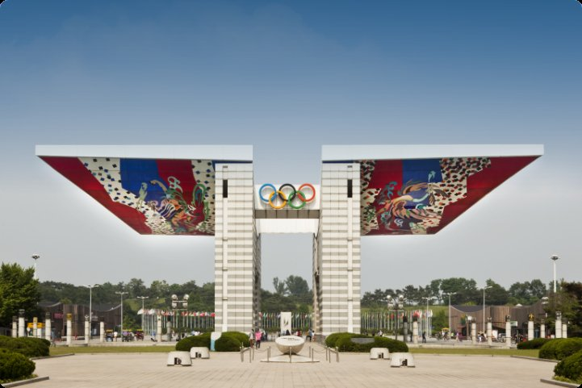
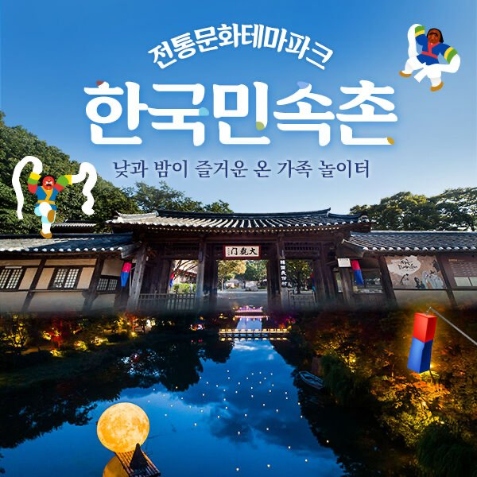

PHOTOSPOT플러스 코드로 찍은 사진 명소 6곳 | 서울 · 수원 · 용인 |
| 홈 | 전체 지도 | 경복궁 | 올림픽공원 | 화성행궁 | 민속촌 | 에버랜드 | 강남대 | 방명록 |
Notice사진 찍기 좋은 곳 여섯 군데를 구글 플러스 코드로 표시한 홈페이지입니다. 코드를 구글 지도 검색창에 그대로 붙여 넣으면 그 자리로 바로 이동합니다. 오른쪽 설문에 참여해 주세요. 2026년 8월 14일 업데이트 |
Update
|
Poll |
전체 지도구글 내 지도(My Maps)로 직접 마커를 찍어 만든 지도입니다. 마커를 누르면 장소 이름과 설명이 나옵니다.
플러스 코드 위치표플러스 코드는 주소가 없는 곳도 가리킬 수 있는 위치 코드입니다. 짧은 코드(예: 7459+H6)는 지역 이름과 함께 써야 하고, 지역 이름 없이 쓰려면 앞에 지역 번호 네 자리를 붙인 전체 코드(8Q997459+H6)를 사용합니다. 이 홈페이지의 지도는 모두 전체 코드로 위치를 찍었습니다.
|
||||||||||||||||||||||||||||||||||||||
1. 경복궁 서울특별시 종로구 |
|
플러스 코드 HXHG+RR 서울특별시 · 큰 지도로 보기 |
촬영 팁
|
2. 올림픽공원 서울특별시 송파구 |
|
플러스 코드 G4CC+7H 서울특별시 · 큰 지도로 보기 |

촬영 팁
|
3. 화성행궁 경기도 수원시 |
|
플러스 코드 72J7+QF 수원시 경기도 · 큰 지도로 보기 |
촬영 팁
|
4. 한국민속촌 경기도 용인시 |
|
플러스 코드 7459+H6 용인시 경기도 · 큰 지도로 보기 |

촬영 팁
|
5. 에버랜드 경기도 용인시 |
|
플러스 코드 76V3+H2 용인시 경기도 · 큰 지도로 보기 |
촬영 팁
|
6. 강남대학교 경기도 용인시 |
|
플러스 코드 74GJ+7X 용인시 경기도 · 큰 지도로 보기 |
촬영 팁
|
시간대별 촬영 팁
|
||||||||||||||||||
사진첩※ 직접 찍거나 모은 사진입니다. 사진을 누르면 그 장소 설명으로 이동합니다.
|
포토스팟 추천하기지금까지 올라온 추천
|
|||||||||||||||||||||||||
|
강남대학교 K-MOVE 스쿨 HTML 실습 · 미니 홈페이지 과제 전체 지도 | 사진첩 | 방명록 | 맨 위로 |